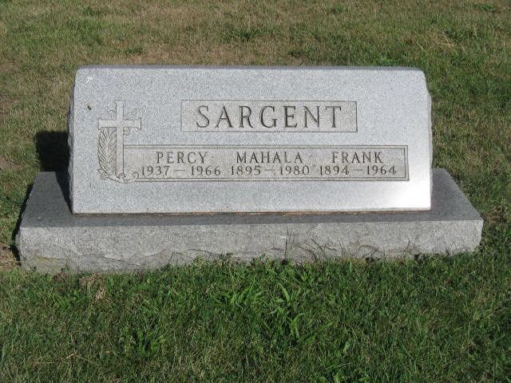
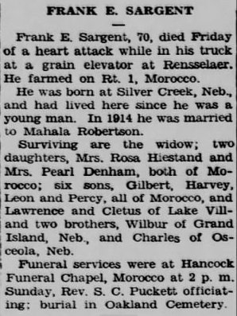
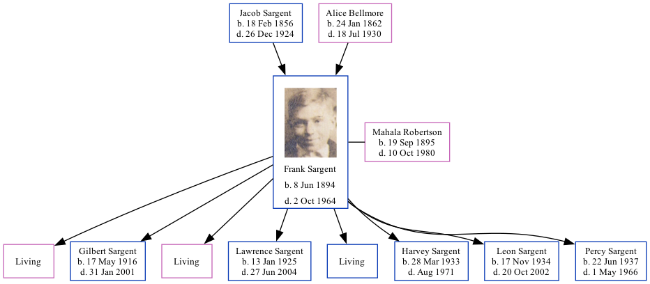

Frank Edward Sargent 1894 - 1964 [ Home ] | [ Calendar ] | [ Surnames Index ] | [ Family History ]The son of Jacob Sargent and Alice Bellmore Frank Sargent , the third cousin three-times-removed on the mother's side of Nigel Horne , was born in Silver Creek, Merrick, Nebraska, USA on Jun 8, 18941,2 and married Mahala Robertson (with whom he had 8 children: Rosa , Gilbert Jake , Pearl , Lawrence Leroy , Cletus Edward , Harvey A , Leon Burton and Percy B , along with 3 surviving children) in Kankakee, Illinois, USA on Feb 17, 19143 .
Throughout his life, Frank lived in several places: in Newton, Indiana, USA on Jan 1, 19205 ; in Jackson, Indiana on Apr 1, 19306 ; and in Lake Village, Indiana on Apr 18, 19404 . He served in the Military from 1917 to 1918 (world War I Draft Registration Cards ).
He died on Oct 2, 1964 in Newton, Jasper, Indiana1 (coronary Thrombosis) and was buried at Oakland Cemetery, Morocco, Indiana on Oct 4, 1964 (an overcast day).
Parents Jacob was born on Feb 18, 1856Alice Josephine was born on Jan 24, 1862Children Gilbert Jake was born on May 17, 1916Lawrence Leroy was born on Jan 13, 1925Harvey A was born on Mar 28, 1933Leon Burton was born on Nov 17, 1934Percy B was born on Jun 22, 1937Citations Social Security Death Index - Findmypast World War I Draft Registration Cards - Findmypast United States Marriages - Findmypast US Census 1940 - Findmypast (was age 46 and the head of the household) US Census 1920 - Findmypast (was age 25 and the head of the household) US Census 1930 - Findmypast (was age 37 and the head of the household) Media Frank Sargent - Mahala - gravestone  Frank Sargent Obituary  Frank Edward Sargent Frank Sargent - 2 US Census 1920 - USC/1920/004965827/01068/001 US Census 1930 - USC/1930/004950635/01043/000 World War I Draft Registration Cards - USM/WWIDR/1669446947 Social Security Death Index - USBMD-SSDI-721072451 Family Tree Map
Generated by ged2site . Last updated on Feb 28, 2025